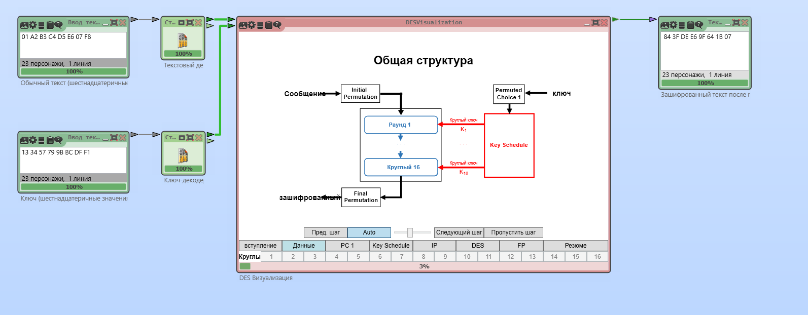

Cryptool 2 бағдарламалық құралының көмегімен тарихи шифрларды талдау
Практикалық жұмыстың мақсаты: Cryptool 2 бағдарламалық құралын пайдаланып, тарихи шифрлардың жұмыс істеу принциптерін зерттеу, сонымен қатар олардың криптоталдауын жүргізу.
Практикалық жұмыстың тапсырмалары
Cryptool 2 бағдарламасының функцияларын пайдалана отырып, келесі криптографиялық примитивтерді талдаңыз:
1. Цезарь шифры, ауыстыру және алмастыру шифрлары (моноалфавиттік шифрлардың мысалдары ретінде);
2. Vigenère шифры (полиалфавиттік шифрдың мысалы ретінде);
Жұмыстың орындалу тәртібі.
1. CrypTool бағдарламалық құралында енгізілген криптожүйенің мысалы негізінде қарапайым мәтінді шифрлауды орындаңыз
2. Сәйкес үлгіні ашу үшін бағдарламалық құралда Шаблон бөлімінде Криптография -> Классическая -> Цезарь Шифер бөліміне өтіңіз (1.1-сурет) .
1.1-сурет. Cryptool 2 бағдарламалық құралындағы классикалық криптожүйелердің үлгілері
2. Цезарь шифрін пайдаланып шифрлау үлгісін ашыңыз. Ашық мәтін өрісінде өзіңіздің ашық мәтініңізді, Alphabet өрісінде рұқсат етілген алфавитті және криптографиялық кілттің мәнін орнатыңыз (1.2-сурет). Ашық мәтін мен кілтті өзіңіз таңдай аласыз. Кейінгі криптоталдау жылдамырақ және сәтті болуы үшін ашық мәтін мүмкіндігінше үлкен болуы керек, шифрмен рұқсат етілмеген мәндерді (тыныс белгілері, жақшалар, басқа алфавиттегі кірістірулер және т.б.) қамтымауы керек. Шифрланған мәтін өрісінен алынған шифрлық мәтінді және кейінірек пайдалану үшін кілт мәнін сақтаңыз.
1.2-сурет. Моноалфавиттік Цезарь шифрін қолданатын шифрлау схемасы.
3. Цезарь блогында шифрды шешу режимін таңдай отырып, сол үлгіні қолданып шифрды шешуді орындаңыз (1.3-сурет). Шығару мәнін талдаңыз. Ол 2-тармақтағы қарапайым мәтінмен дәл сәйкес келеді ме?
1.3-сурет. Цезарь шифрын шешу схемасы.
Блоктық симметриялық DES алгоритмінің негізгі құрылымдық элементтері
Мақсаты: DES алгоритмдерінің жұмыс істеуінің негізгі принциптерін оқып үйрену.
Жұмыстың орындалу тәртібі.
1.Ең алдымен жаңадан жоба ашыныз.
2.Инструменты бөлімінен ввод текста құралын тауып алып жұмыс терезесіне төмендегі суретте көрсетілгендей орналастырыныз.
Мәтінді енгізу құралы
Бағдарламаның
жұмыс терезесі
3. Инструменты бөлімінен Строковый декодер құралын алып әр мәтін енгізу жолына қойыныз(Ввод текста). Строковый декодер құралын екі рет басып,баптаудағы формат ввод бөлімін оналтылық форматқа өзгертініз.Бұл бізге тек оналтылық форматтағы мәтінді алу үшін қажет.
Оналтылық форматқа өзгерту
Бағдарламаның жұмыс терезесі
4. Современные шифры бөлімінен DESVisualization құралын жұмыс терезесіне қойыныз.Бұл мәтінді шифрлау үшін қажет.
5. Инструменты бөлімінен Текстовой вывод құралын төмендегідей орналастырыныз.Бұл бізге шифланған мәтінді шығару үшін қажет.Барлық құралдарды төмендегідей бір-бірімен қосыныз.
Cryptool 2 бағдарламасында DES шифрлау алгоритмінің орындалуы
6. Ввод текста құралына мәтіндерді енгізуіміз қажет.Бірінші орналасқан құралға шифрланатын мәтінді,ал екіншісіне кілтті енгіземіз.Енгізіп болған сон жоғарыда орналасқан Играть батырмасын басыныз.DESVisualization құралы арқылы шифрлау әр қадамы қалай орындалғанын көре аламыз.

Cryptool 2 бағдарламасында DES шифрлау алгоритмінің орындалу процесі
AES алгоритмінің негізгі құрылымдық элементтері
Мақсаты: AES алгоритмдерінің жұмыс істеуінің негізгі принциптерін оқып үйрену.
Жұмыстың орындалу тәртібі.
1.Ең алдымен жаңадан жоба ашыныз.
2.Инструменты бөлімінен ввод текста құралын тауып алып жұмыс терезесіне төмендегі суретте көрсетілгендей орналастырыныз.
Мәтінді енгізу құралы
Бағдарламаның
жұмыс терезесі
3. Инструменты бөлімінен Строковый декодер құралын алып әр мәтін енгізу жолына қойыныз(Ввод текста).Строковый декодер құралын екі рет басып,баптаудағы формат ввод бөлімін оналтылық форматқа өзгертініз.Бұл бізге тек оналтылық форматтағы мәтінді алу үшін қажет.
Оналтылық форматқа өзгерту
Бағдарламаның жұмыс терезесі
4. Современные шифры бөлімінен A
ESVisualization құралын жұмыс терезесіне қойыныз.Бұл мәтінді шифрлау үшін қажет.
5. Инструменты бөлімінен Текстовой вывод құралын төмендегідей орналастырыныз.Бұл бізге шифланған мәтінді шығару үшін қажет.Барлық құралдарды төмендегідей бір-бірімен қосыныз.
Cryptool 2 бағдарламасында AES шифрлау алгоритмінің орындалуы
6. Ввод текста құралына мәтіндерді енгізуіміз қажет.Бірінші орналасқан құралға шифрланатын мәтінді,ал екіншісіне кілтті енгіземіз.Енгізіп болған сон жоғарыда орналасқан Играть батырмасын басыныз.AESVisualization құралы арқылы шифрлау әр қадамы қалай орындалғанын көре аламыз.
Cryptool 2 бағдарламасында AES шифрлау алгоритмінің орындалу процесі
Асимметриялық криптожүйелер
Мақсаты: мысал ретінде RSA алгоритмін пайдалана отырып, асимметриялық криптожүйелердің жұмыс істеуінің негізгі принциптерін зерттеу.
Жұмыстың орындалу тәртібі.
1.Ең алдымен жаңадан жоба ашыныз.
2.Инструменты бөлімінен ввод текста құралын тауып алып жұмыс терезесіне төмендегі суретте көрсетілгендей орналастырыныз.
Бағдарламаның жұмыс терезесі
3. Современные шифры бөлімінен Генератор ключей RSA құралын жұмыс терезесіне қойыныз.Бұл кілтті баптау үшін қажет және оны төмендегідей баптаныз.
RSA кілттер генераторын баптау
4. Современные шифры бөлімінен RSA құралын жұмыс терезесіне қойыныз.Бұл мәтінді шифрлау үшін қажет.
5. Инструменты бөлімінен Текстовой вывод құралын төмендегідей орналастырыныз.Бұл бізге шифланған мәтінді шығару үшін қажет.Барлық құралдарды төмендегідей бір-бірімен қосыныз.
Cryptool 2 бағдарламасында RSA шифрлау алгоритмінің орындалуы
5. Мәтінді енгізу жолына өзініз қалаған мәтінді енгізіп,Играть басу арқылы мәтінді шифрланыз.
Cryptool 2 бағдарламасында RSA шифрлау алгоритмінің орындалуы